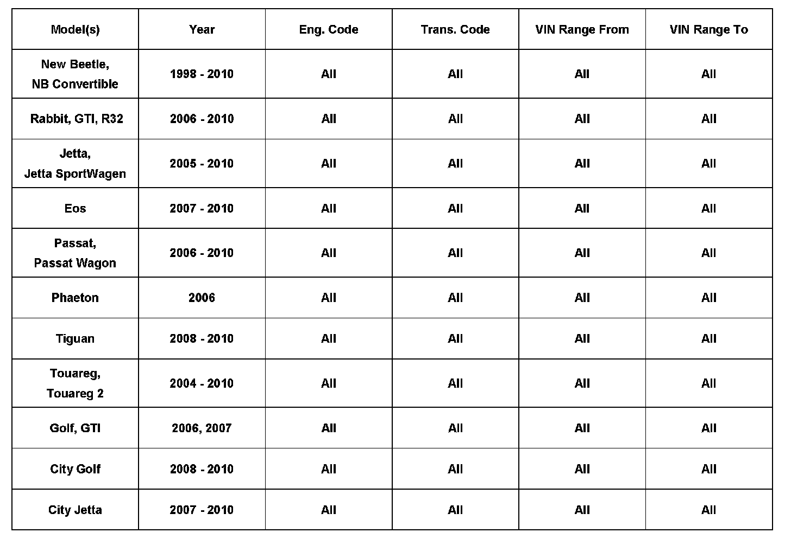
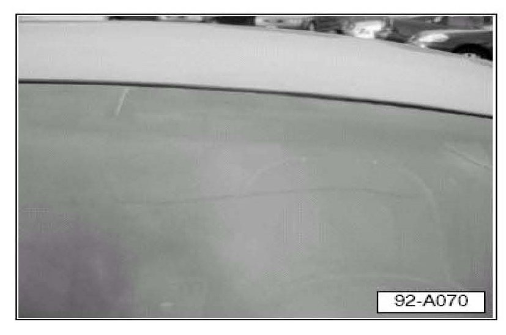
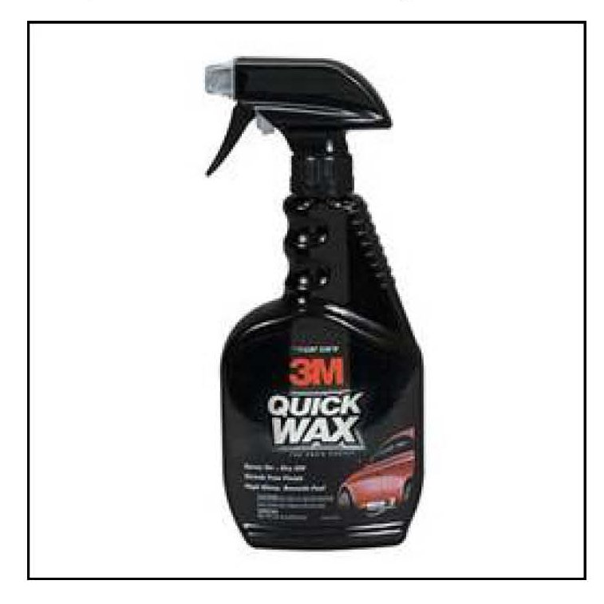
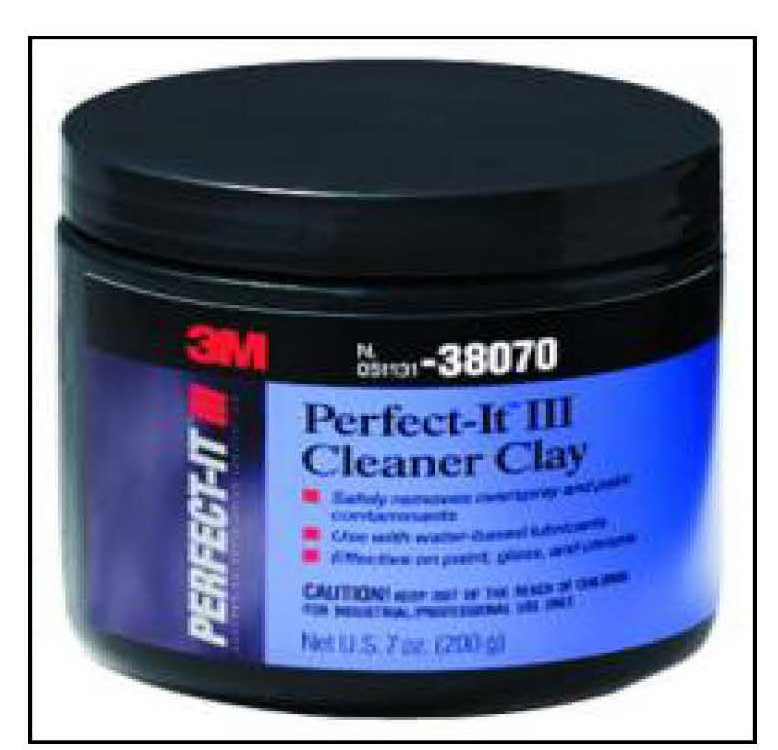
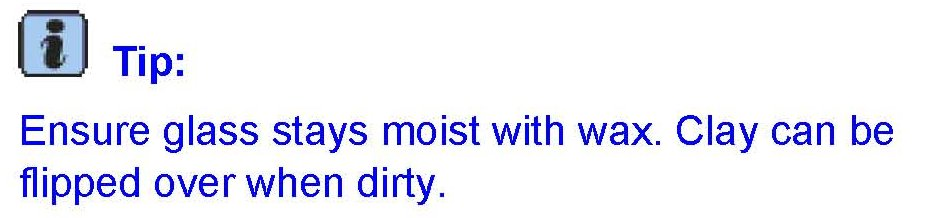
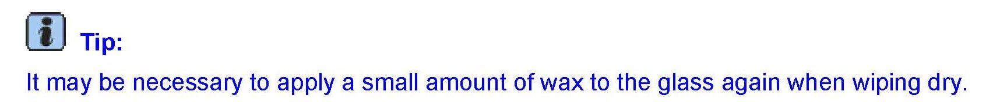
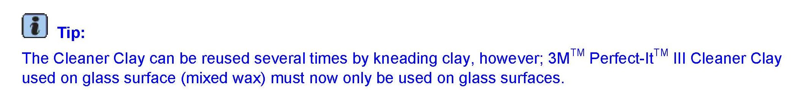

Wipers/Washers - Smearing/Streaking (Canada)
92 08 03Sept. 3, 2008
2018568

Vehicle Information
Condition
Customer States Windshield Wipers, Streak or Smear - Canada Only
To avoid unnecessary replacement of wiper blades, a few potential causes such as, the condition / cleanliness of the windshield and wiper blades, should be checked first.
Technical Background
If addressed, the wiper performance is significantly improved, as is the longevity of the wiper blades.
Customer may complain that wipers are ineffective. Complaints may include that the wipers:
^ Streak or smear.
^ Do not clear across entire length of blade.
^ Chatter or skip as wiper travels across windshield glass.
Production Solution
No production change required.
Service
The following items are to be corrected, if necessary, before replacing wiper blades:

Wipers Streak or Smear:
The most common causes for streaking wipers are:
^ Dirty windshield.
^ Dirty wiper blades.
^ Stone chips, cracks or scratches in the windshield.
BEFORE REPLACING THE WIPER BLADES:
^ Carefully inspect the windshield for any stone chips and scratches. Stone chips and scratches can affect the performance of the blade.
^ Stone chips and scratches caused by an outside influence CANNOT be claimed under warranty. Consult with the customer and schedule a repair or replacement of the windshield glass before replacing wiper blades.
Exterior Glass Cleaning
Residue on windshield, i.e., industrial fallout (rough surface, snake skin appearance, streaking) must be removed prior to replacing wiper blades.
The procedure for cleaning the windshield glass (removing industrial fallout) is as follows:

With vehicle exterior (including all glass surfaces)
washed and dried, perform the following:
^ Apply 3M(TM) Quick Wax(TM) Part No. 39034 to
windshield.

Using 1/3 of a bar 3M(TM) Perfect-It(TM) III Cleaner Clay
Part No. 38070:
^ Flatten clay into a small palm size pancake.

^ With clay flat between windshield and your hand, rub windshield (with light friction) using a vertical motion (up/down) across windshield).

Wipe dry with a clean/dry towel.
Inspect glass surface using the palm of your hand (feel for rough surface).
If rough surface is found:

^ Repeat process until clean.
DO NOT use clay mixed with gloss enhancer on exterior body surfaces of vehicle.
Waxes, particularly those applied by car washes and industrial fallout from various sources, may leave a residue on the windshield and wipers which affects wiping efficiency.
If after cleaning and inspecting components, the wiper blades still streak or smear, replace windshield wipers.
Warranty
Information only.
Required Parts and Tools
No special parts required. No special tools required.
Additional Information
All part and service references provided in this Technical Bulletin are subject to change and/or removal.
Always check with your Parts Dept. and Repair Manuals for the latest information.